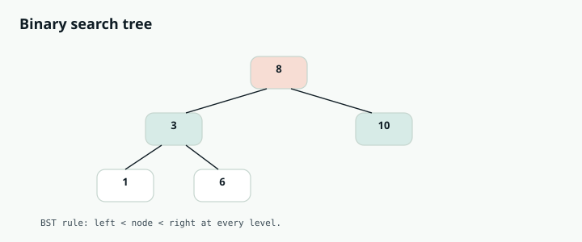

Competitive Programming
Chapter 09
Trees and BST

T R E E S A N D H E A P S
A tree is a branching structure. One node at the top (the root), and each node points to its children below. There are no loops. Most tree problems are solved by recursion, because a tree is made of smaller trees: every node is itself the root of its own subtree. root 8 3 10 1 6 14 leaves have no children A binary tree: each node has at most a left child and a right child.
The two ways to walk a tree
Depth first (DFS). Go as deep as you can down one branch before backing up. This is naturally recursive. There are three orders depending on when you visit the node relative to its children: Preorder: node, then left, then right. Good for copying a tree.
Inorder: left, then node, then right. On a binary search tree this visits values in sorted order.
Postorder: left, then right, then node. Good when you need results from children first, like computing height.
Breadth first (BFS). Visit the tree level by level, top to bottom. This uses a queue, and it is the tool for "level order" problems and shortest path in an unweighted graph.
R E A C H F O R T H E S E W H E N Y O U S E E
"Depth", "height", "count nodes", "is the tree balanced", "path sum": use DFS recursion. "Level order", "nodes at each level", "minimum depth", "right side view": use BFS with a queue. "Search / insert / validate" on a binary search tree: use the sorted property to go left or right.
The node, and DFS with recursion
Max depth is the perfect first example. The depth of a tree is one plus the depth of its taller subtree.
An empty tree has depth zero. That sentence is the whole algorithm.
class TreeNode:
def __init__(self, val=0, left=None, right=None):
self.val = val
self.left = left
self.right = right
def max_depth(root):
if not root:
return 0 # empty tree has depth 0
left = max_depth(root.left) # depth of left subtree
right = max_depth(root.right) # depth of right subtree
return 1 + max(left, right) # this node adds one level
class TreeNode {
int val;
TreeNode left, right;
TreeNode(int val) { this.val = val; }
}
int maxDepth(TreeNode root) {
if (root == null) return 0; // empty -> 0
int left = maxDepth(root.left);
int right = maxDepth(root.right);
return 1 + Math.max(left, right); // this node adds a level
}
T H E R E C U R S I V E T R E E T E M P L A T E
Almost every DFS tree function has the same three parts. First, the base case: if the node is null, return the "empty" answer (0, or true, or null). Second, recurse on the left and right children. Third, combine their answers with the current node's value. Once you see this shape, you can write most tree solutions in a minute.
BFS: level order traversal
Use a queue. Put the root in. Then, while the queue is not empty, process everything currently in it as one level, and add all their children for the next level. Counting the queue size at the start of each round is the trick that separates the levels cleanly.
from collections import deque
def level_order(root):
if not root:
return []
result = []
queue = deque([root])
while queue:
level = []
for _ in range(len(queue)): # exactly the nodes on this level
node = queue.popleft()
level.append(node.val)
if node.left: queue.append(node.left)
if node.right: queue.append(node.right)
result.append(level)
return result
List<List<Integer>> levelOrder(TreeNode root) {
List<List<Integer>> result = new ArrayList<>();
if (root == null) return result;
Queue<TreeNode> queue = new LinkedList<>();
queue.offer(root);
while (!queue.isEmpty()) {
int size = queue.size(); // nodes on this level
List<Integer> level = new ArrayList<>();
for (int i = 0; i < size; i++) {
TreeNode node = queue.poll();
level.add(node.val);
if (node.left != null) queue.offer(node.left);
if (node.right != null) queue.offer(node.right);
}
result.add(level);
}
return result;
}
Binary search trees: the sorted shortcut
A binary search tree keeps a rule at every node: everything in the left subtree is smaller, everything in the right subtree is bigger. That means searching is just repeated "go left or go right," which is binary search on a tree. Insert follows the same path until it finds an empty spot.
def search_bst(root, target):
while root:
if target == root.val:
return root
root = root.left if target < root.val else root.right
return None
def insert_bst(root, val):
if not root:
return TreeNode(val) # found the empty spot
if val < root.val:
root.left = insert_bst(root.left, val)
else:
root.right = insert_bst(root.right, val)
return root
TreeNode searchBST(TreeNode root, int target) {
while (root != null) {
if (target == root.val) return root;
root = (target < root.val) ? root.left : root.right;
}
return null;
}
TreeNode insertBST(TreeNode root, int val) {
if (root == null) return new TreeNode(val); // empty spot
if (val < root.val) root.left = insertBST(root.left, val);
else root.right = insertBST(root.right, val);
return root;
}
W A T C H O U T
To validate a binary search tree, checking only that each node is bigger than its left child and smaller than its right child is not enough. A node deep on the left must be smaller than an ancestor far above it. Pass down a valid range (a low and high bound) as you recurse, and tighten it at each step. Also remember deep recursion can overflow the call stack on a very tall tree, so extremely skewed trees sometimes need an iterative approach.
Deeper Intuition
Why recursion and the BST order do the work
Most tree problems are solved by asking one question: if I already had the answers for my left and right subtrees, how would I combine them into mine. That single idea gives height, diameter, balance, and path sums almost for free. A binary search tree adds an ordering rule, everything left is smaller and everything right is larger, which lets you find, insert, or locate a common ancestor by simply comparing values and walking down one side.
LCA of 2 and 8 is 6, the node where their paths split 6 2 8 0 4 7 9 In a BST, walk down comparing values. The first node that sits between the two targets is their lowest common ancestor.
Another worked example: Lowest Common Ancestor of a
BST
The lowest common ancestor of two nodes is where their paths from the root first split. In a BST you can find it without recursion: walk down from the root, and if both targets are smaller go left, if both
are larger go right, otherwise this node is the split point and the answer.
def lowest_common_ancestor(root, p, q):
node = root
while node:
if p.val < node.val and q.val < node.val:
node = node.left # both smaller, go left
elif p.val > node.val and q.val > node.val:
node = node.right # both larger, go right
else:
return node # the split point is the LCA
TreeNode lowestCommonAncestor(TreeNode root, TreeNode p, TreeNode q) {
TreeNode node = root;
while (node != null) {
if (p.val < node.val && q.val < node.val) node = node.left;
else if (p.val > node.val && q.val > node.val) node = node.right;
else return node; // split point
}
return null;
}
Going Deeper
What kinds of problems this solves
U S E T H I S P A T T E R N F O R
Anything on a hierarchy: depth and height, path and sum questions, validating or searching a binary search tree, working level by level, finding a lowest common ancestor, or building and serializing a tree.
| Problem type | Classic examples |
|---|---|
| Depth and path with DFS | Maximum Depth, Diameter of Binary Tree, Path Sum, Balanced Binary Tree, Binary Tree Maximum Path Sum |
| Level by level with BFS | Binary Tree Level Order Traversal, Zigzag Level Order, Right Side View, Average of Levels |
| Binary search tree properties | Validate Binary Search Tree, Kth Smallest Element in a BST, Lowest Common Ancestor of a BST, Convert Sorted Array to BST |
| Construct and serialize | Construct Tree from Preorder and Inorder, Serialize and Deserialize Binary Tree, Flatten Binary Tree to Linked List |
The algorithm, in a bit more detail
Most tree problems are a recursion that solves the children first and then combines their answers.
Ask "if I already knew the answer for my left and right subtrees, how would I compute mine?" That single question gives you height, diameter, balance, and path sums almost for free.
A binary search tree adds an ordering rule: everything left is smaller, everything right is larger. That lets you search, insert, and find a lowest common ancestor by simply comparing values and walking down one side, which is O(height). An in order traversal of a BST visits values in sorted order, which is why "kth smallest" and "validate BST" lean on it.
Variations you will run into
Depth first traversal comes in preorder, inorder, and postorder, done recursively or with an explicit stack. Breadth first uses a queue and naturally groups nodes by level. For BST questions, always think about the ordering invariant before writing code.
Edge cases and gotchas
To validate a BST you must pass down an allowed range, not just compare a node with its direct parent.
Handle the null node as your base case cleanly, it is the root of most tree bugs.
Level order needs to capture the queue size at the start of each level so you know where one Recursion depth can be large on a skewed tree, so very deep trees may need an iterative
Interview drill — Trees
Name the traversal, then code it.
More drills in the Interview Lab.
Q1. Serialize / Deserialize Binary Tree
Q2. Validate BST
Is the tree a valid BST?
Pass (low, high) bounds, or inorder strictly increasing.
Q3. Lowest Common Ancestor
LCA of two nodes.
BST: walk by value. General: if both sides nonempty, root is LCA.
Q4. Level Order Traversal
Values grouped by level.
Queue; process queue.length nodes per level into a list.
Q5. Max Depth / Invert Tree
Height or mirror the tree.
Depth=1+max(left,right). Invert=swap children then recurse.